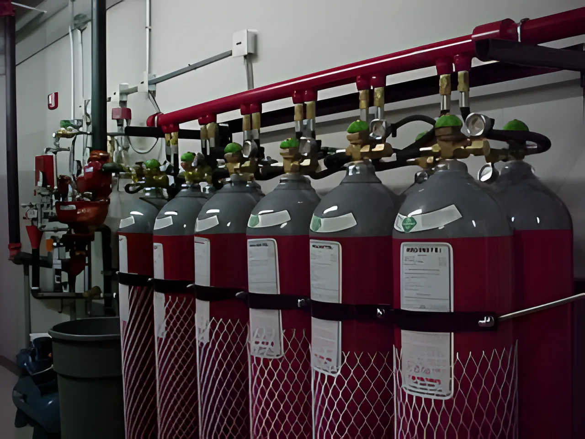
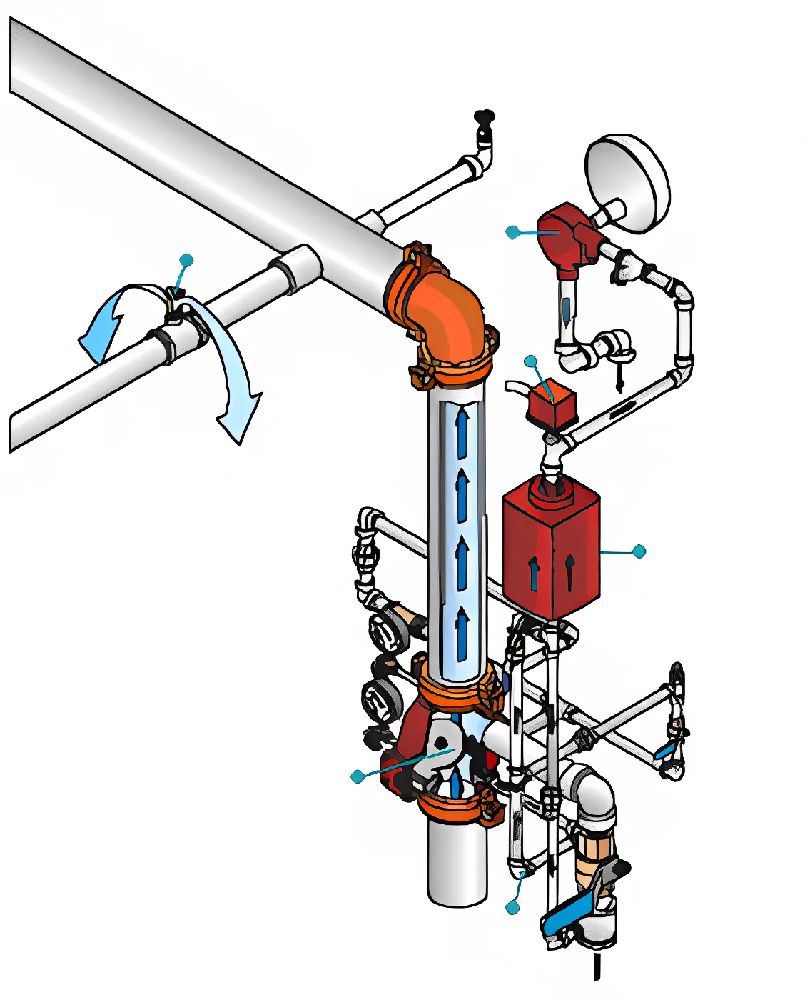
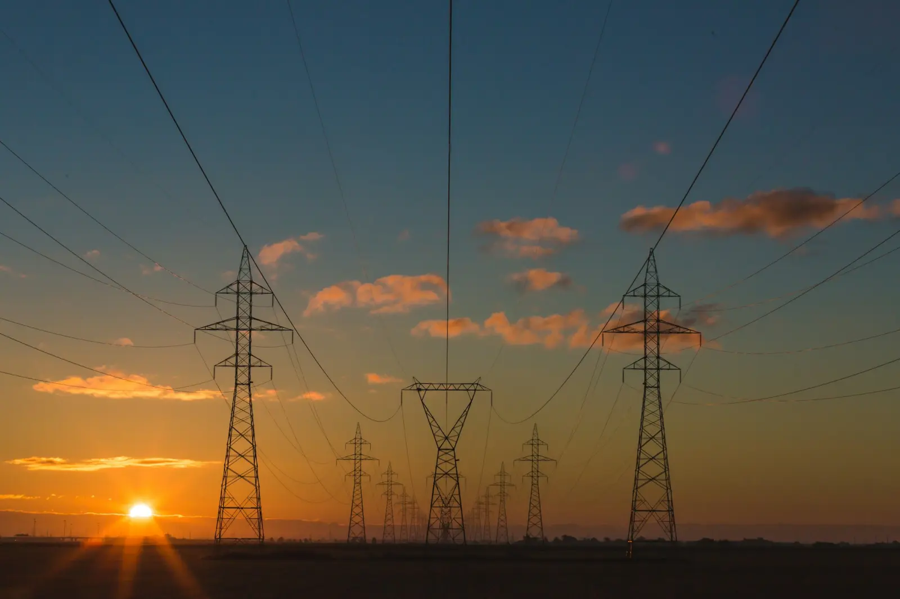
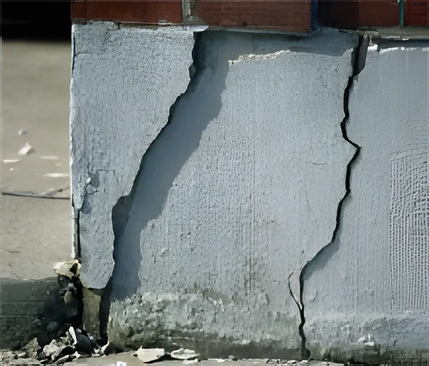

HFC-227 (FM200)
أنظمة الغاز النظيف، توريد وتركيب.

كشف الحريق والحماية منه هو نشاطنا الرئيسي: البيع والتركيب والتشغيل والاستشارات، ومنها اعتماد الدفاع المدني وفق كود الحريق الخليجي أو IFC 2009 أو IBC 2009 أو NFPA. وإلى جانبه تعمل داكو في الطاقة والإنشاءات والاستشارات.
بدأت داكو بصيانة معدات الحريق وكبرت خطوة بخطوة. واليوم نقدم كامل الخدمات والتوريدات لأنظمة مكافحة الحريق والإنذار.
صممنا أنظمة حماية ومكافحة حريق كثيرة في أنحاء المملكة. مصممو الأنظمة لدينا من الولايات المتحدة ومعتمدون من NFPA، لمراجعة تصاميم المشاريع الكبرى في المملكة أو إعدادها وفق معايير NFPA. وداكو معتمدة لدى الدفاع المدني السعودي، ونستطيع اعتماد مخططاتك وفق كود الحريق الخليجي.
أنظمة الغاز النظيف، توريد وتركيب.
أنظمة الرشاشات، توريد وتركيب، مع الحسابات الهيدروليكية الخاصة بها.

أنظمة الفوم، توريد وتركيب.
جميع أنظمة كشف الحريق الذكية، توريد وتركيب.
لدى داكو خبرة واسعة في مشاريع توليد الطاقة. عملنا مقاولاً من الباطن لـ SEC وSWCC والمرافق لأكثر من عشر سنوات، ونفذنا مشاريع رئيسية في التعزيز والاستبدال مقاولاً من الباطن لشركة الشبكة الوطنية في المملكة.
تشمل خبرتنا خدمات التوربينات والمولدات والعمرات وتوريد قطع الغيار. نخدم ونورّد قطع الغيار لمعظم أسطول التوربينات الغازية في المملكة، ونبيع توربينات مجددة لدول أخرى، ويقدم شركاؤنا في أوروبا حلول الهندسة العكسية.

يبدأ عملنا في الإنشاءات من دراسة المخطط وتجهيز المشروع حتى التسليم على المفتاح. نبني للملاك الأفراد وللمطورين العقاريين، وداكو شريكة في ملكية بعض المشاريع.
إدارتنا للمشاريع ترى الجودة قيمة تضيف للمشروع، لا تكلفة.
تعمل داكو استشارياً في عدد من المشاريع عبر شركتها التابعة "تاكو". وتاكو شركة مرخصة من الدفاع المدني السعودي لاعتماد مخططات الحريق.
قدمت تاكو نصائح فنية ناجحة لملاك عقارات في مشاكل إنشائية خطيرة في مبانيهم، ولديها القدرة على تقديم المشورة في التسويات بين المقاولين والملاك.

تقدم داكو استشارات الأعمال عبر خبراء من سويسرا وكرواتيا: تحسين العمليات وإعادة الهيكلة وتأسيس الأعمال وإطلاقها. نبدأ من دراسة الجدوى، ثم مواءمة الوظائف واختيار النموذج المالي والبرامج، وصولاً إلى توظيف الإدارة.
ساعدنا منشآت صغيرة ومتوسطة على مواصلة النجاح واستقرار تنظيمها.
تقدم داكو ندوات NFPA لعملائها. انضم للقائمة البريدية لفعاليات NFPA ونبلغك بالجلسات القادمة.